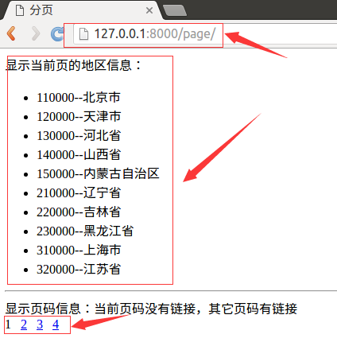
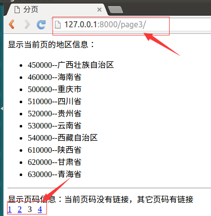

分页
- Django提供了数据分页的类，这些类被定义在django/core/paginator.py中
- 对象Paginator用于对列进行一页n条数据的分页运算
- 对象Page用于表示第m页的数据
Paginator对象
- 方法init(列表,int)：返回分页对象，参数为列表数据，每面数据的条数
- 属性count：返回对象总数
- 属性num_pages：返回页面总数
- 属性page_range：返回页码列表，从1开始，例如[1, 2, 3, 4]
- 方法page(m)：返回Page对象，表示第m页的数据，下标以1开始
Page对象
- 调用Paginator对象的page()方法返回Page对象，不需要手动构造
- 属性object_list：返回当前页对象的列表
- 属性number：返回当前是第几页，从1开始
- 属性paginator：当前页对应的Paginator对象
- 方法has_next()：如果有下一页返回True
- 方法has_previous()：如果有上一页返回True
- 方法len()：返回当前页面对象的个数
- 迭代页面对象：访问当前页面中的每个对象
示例
在booktest/views.py文件中创建视图page_test
from django.core.paginator import Paginator
from models import AreaInfo
...
def pagelist(request,pindex):
sheng=AreaInfo.objects.filter(aParent__isnull=True)
paginator=Paginator(sheng,10)
if pindex=='':
pindex='1'
page=paginator.page(int(pindex))
return render(request,'booktest/pagelist.html',{'page':page})
在booktest/urls.py文件中配置url
url('^page(\d*)/$',views.pagelist),
在templates/booktest/目录下创建page_test.html模板文件
<!DOCTYPE html>
<html lang="en">
<head>
<meta charset="UTF-8">
<title>Title</title>
</head>
<body>
<ul>
{%for area in page%}
<li>{{area.atitle}}</li>
{%endfor%}
</ul>
<hr>
{%if page.has_previous%}
<a href="/page{{page.number|add:-1}}/">上一页</a>
{%endif%}
{%for pindex in page.paginator.page_range%}
{%if pindex == page.number%}
{{pindex}}
{%else%}
<a href="/page{{pindex}}/">{{pindex}}</a>
{%endif%}
{%endfor%}
{%if page.has_next%}
<a href="/page{{page.number|add:1}}/">下一页</a>
{%endif%}
</body>
</html>
运行服务器，在浏览器中输入 http://127.0.0.1:8000/page/

点击页码数字，效果如下图
